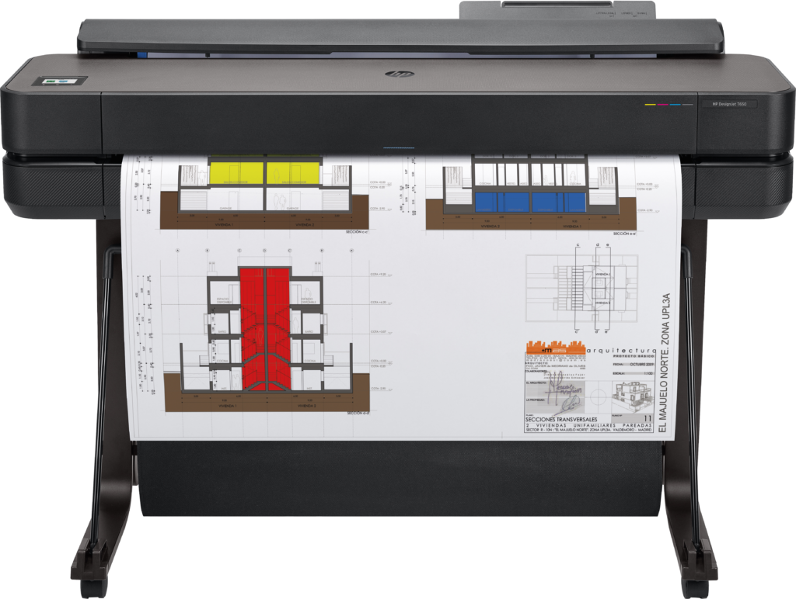

As plotters são dispositivos de saída gráfica que se destacam pela precisão e versatilidade na criação de desenhos e gráficos de alta qualidade. Diferentemente das impressoras convencionais, que são projetadas principalmente para a produção de texto e imagens em papel, as plotters são especialmente projetadas para a criação de desenhos técnicos, gráficos de grande formato e outros projetos que demandam detalhes minuciosos. Elas são amplamente utilizadas em uma variedade de campos, incluindo arquitetura, engenharia, design gráfico e até mesmo indústrias de fabricação, onde desempenham um papel essencial na produção de layouts, esquemas e planos técnicos de alta precisão.
